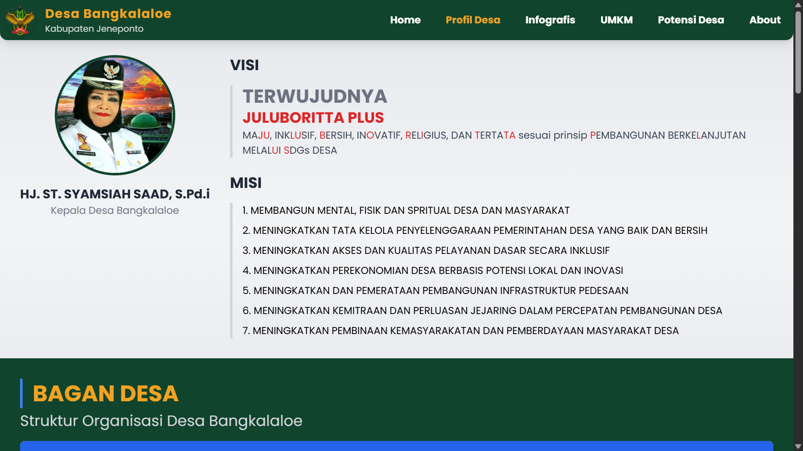
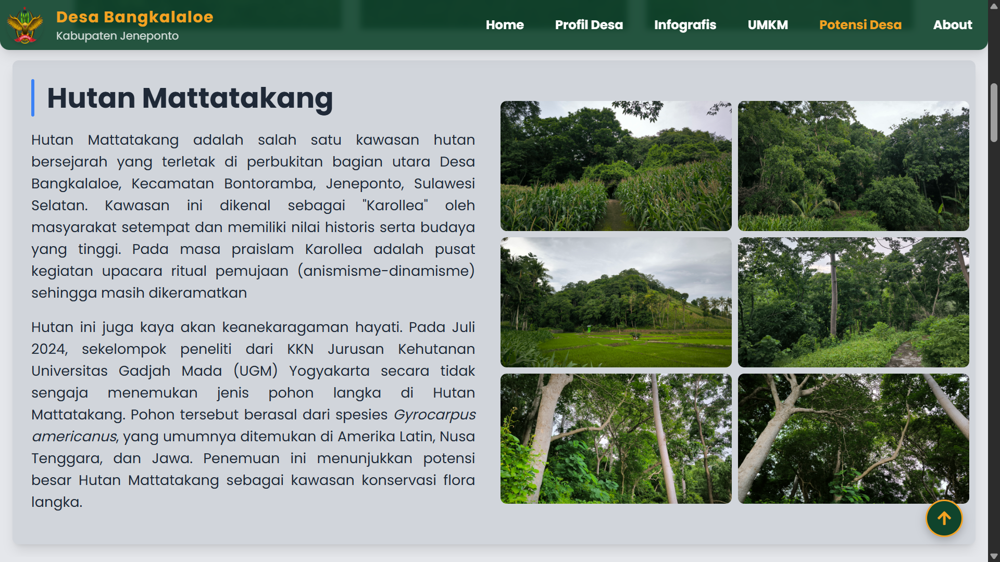
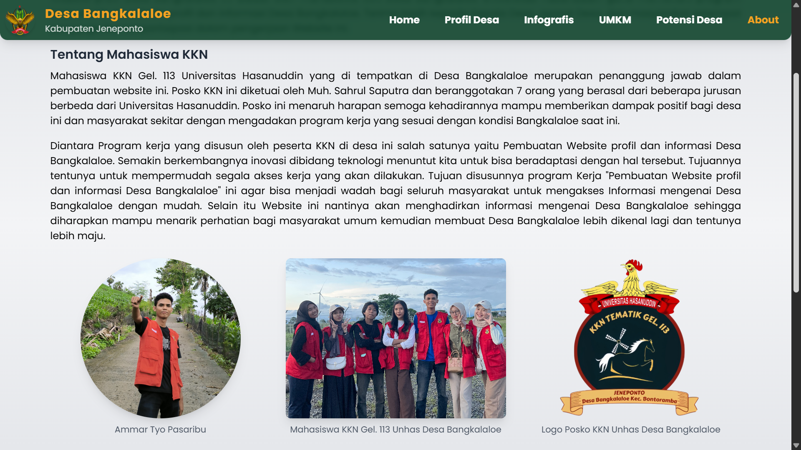

📸 Screenshots




Website profil resmi Desa Bangkalaloe, Jeneponto untuk mendukung program KKN. Menampilkan profil desa, sejarah, data monografi, infografis peta, informasi UMKM, serta potensi desa.
| Frontend | HTML, Tailwind CSS, CSS3 |
| Scripting | JavaScript (Vanilla) |
| Maps | Google Maps Embed API |
| Animations | Scroll-reveal, CSS transitions |


